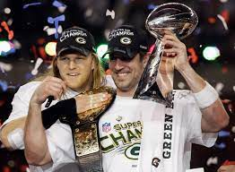
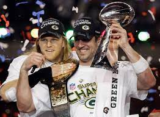
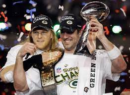

I Jan. 15, 1967 Los Angeles Memorial Coliseum Green Bay 35, Kansas City 10
II Jan. 14, 1968 Orange Bowl (Miami) Green Bay 33, Oakland 14
III Jan. 12, 1969 Orange Bowl (Miami) New York Jets 16, Baltimore 7
IV Jan. 11, 1970 Tulane Stadium (New Orleans) Kansas City 23, Minnesota 7
V Jan. 17, 1971 Orange Bowl (Miami) Baltimore 16, Dallas 13
VI Jan. 16, 1972 Tulane Stadium (New Orleans) Dallas 24, Miami 3
VII Jan. 14, 1973 Los Angeles Memorial Coliseum Miami 14, Washington 7
VIII Jan. 13, 1974 Rice Stadium (Houston) Miami 24, Minnesota 7
IX Jan. 12, 1975 Tulane Stadium (New Orleans) Pittsburgh 16, Minnesota 6
X Jan. 18, 1976 Orange Bowl (Miami) Pittsburgh 21, Dallas 17
XI Jan. 9, 1977 Rose Bowl (Pasadena, Calif.) Oakland 32, Minnesota 14
XII Jan. 15, 1978 Superdome (New Orleans) Dallas 27, Denver 10
XIII Jan. 21, 1979 Orange Bowl (Miami) Pittsburgh 35, Dallas 31
XIV Jan. 20, 1980 Rose Bowl (Pasadena, Calif.) Pittsburgh 31, Los Angeles Rams 19
XV Jan. 25, 1981 Superdome (New Orleans) Oakland 27, Philadelphia 10
XVI Jan. 24, 1982 Silverdome (Pontiac, Mich.) San Francisco 26, Cincinnati 21
XVII Jan. 30, 1983 Rose Bowl (Pasadena, Calif.) Washington 27, Miami 17
XVIII Jan. 22, 1984 Tampa (Fla.) Stadium Los Angeles Raiders 38, Washington 9
XIX Jan. 20, 1985 Stanford (Calif.) Stadium San Francisco 38, Miami 16
XX Jan. 26, 1986 Superdome (New Orleans) Chicago 46, New England 10
XXI Jan. 25, 1987 Rose Bowl (Pasadena, Calif.) New York Giants 39, Denver 20
XXII Jan. 31, 1988 Jack Murphy Stadium (San Diego) Washington 42, Denver 10
XXIII Jan. 22, 1989 Joe Robbie Stadium (Miami) San Francisco 20, Cincinnati 16
XXIV Jan. 28, 1990 Superdome (New Orleans) San Francisco 55, Denver 10
XXV Jan. 27, 1991 Tampa (Fla.) Stadium New York Giants 20, Buffalo 19
XXVI Jan. 26, 1992 Metrodome (Minneapolis) Washington 37, Buffalo 24
XXVII Jan. 31, 1993 Rose Bowl (Pasadena, Calif.) Dallas 52, Buffalo 17
XXVIII Jan. 30, 1994 Georgia Dome (Atlanta) Dallas 30, Buffalo 13
XXIX Jan. 29, 1995 Joe Robbie Stadium (Miami) San Francisco 49, San Diego 26
XXX Jan. 28, 1996 Sun Devil Stadium (Tempe, Ariz.) Dallas 27, Pittsburgh 17
XXXI Jan. 26, 1997 Superdome (New Orleans) Green Bay 35, New England 21
XXXII Jan. 25, 1998 Qualcomm Stadium (San Diego) Denver 31, Green Bay 24
XXXIII Jan. 31, 1999 Pro Player Stadium (Miami) Denver 34, Atlanta 19
XXXIV Jan. 30, 2000 Georgia Dome (Atlanta) St. Louis 23, Tennessee 16
XXXV Jan. 28, 2001 Raymond James Stadium (Tampa, Fla.) Baltimore 34, New York Giants 7
XXXVI Feb. 3, 2002 Superdome (New Orleans) New England 20, St. Louis 17
XXXVII Jan. 26, 2003 Qualcomm Stadium (San Diego) Tampa Bay 48, Oakland 21
XXXVIII Feb. 1, 2004 Reliant Stadium (Houston) New England 32, Carolina 29
XXXIX Feb. 6, 2005 Alltel Stadium (Jacksonville, Fla.) New England 24, Philadelphia 21
XL Feb. 5, 2006 Ford Field (Detroit) Pittsburgh 21, Seattle 10
XLI Feb. 4, 2007 Dolphin Stadium (Miami) Indianapolis 29, Chicago 17
XLII Feb. 3, 2008 University of Phoenix Stadium (Glendale, Ariz.) New York Giants 17, New England 14
XLIII Feb. 1, 2009 Raymond James Stadium (Tampa, Fla.) Pittsburgh 27, Arizona 23
XLIV Feb. 7, 2010 Sun Life Stadium (Miami) New Orleans 31, Indianapolis 17
XLV Feb. 6, 2011 Cowboys Stadium (Arlington, Texas) Green Bay 31, Pittsburgh 25
XLVI Feb. 5, 2012 Lucas Oil Stadium (Indianapolis) New York Giants 21, New England 17
XLVII Feb. 3, 2013 Mercedes-Benz Superdome (New Orleans) Baltimore 34, San Francisco 31
XLVIII Feb. 2, 2014 MetLife Stadium (East Rutherford, N.J.) Seattle 43, Denver 8
XLIX Feb. 1, 2015 University of Phoenix Stadium (Glendale, Ariz.) New England 28, Seattle 24
50 Feb. 7, 2016 Levi's Stadium (Santa Clara, Calif.) Denver 24, Carolina 10
LI Feb. 5, 2017 NRG Stadium (Houston) New England 34, Atlanta 28
LII Feb. 4, 2018 U.S. Bank Stadium (Minneapolis) Philadelphia 41, New England 33
LIII Feb. 3, 2019 Mercedes-Benz Stadium (Atlanta) New England 13, Los Angeles Rams 3
LIV Feb. 2, 2020 Hard Rock Stadium (Miami) Kansas City 31, San Francisco 20
LV Feb. 7, 2021 Raymond James Stadium (Tampa, Fla.) Tampa Bay 31, Kansas City 9
LVI Feb. 13, 2022 SoFi Stadium (Inglewood, Calif.) Los Angeles Rams 23, Cincinnati 20
LVII Feb. 12, 2023 State Farm Stadium (Glendale, Ariz.) Kansas City 38, Philadelphia 35
I Bart Starr, QB, Green Bay Two touchdown passes
II Bart Starr, QB, Green Bay 202 yards passing, 1 TD
III Joe Namath, QB, New York Jets 206 yards passing
IV Len Dawson, QB, Kansas City 142 yards passing, 1 TD
V Chuck Howley, LB, Dallas Two interceptions, fumble recovery
VI Roger Staubach, QB, Dallas 119 yards passing, 2 TDs
VII Jake Scott, S, Miami Two interceptions
VIII Larry Csonka, FB, Miami 33 carries, 145 yards rushing, 2 TDs
IX Franco Harris, RB, Pittsburgh 158 yards rushing, 1 TD
X Lynn Swann, WR, Pittsburgh 4 catches, 161 yards, 1 TD
XI Fred Biletnikoff, WR, Oakland 4 catches, 79 yards
XII Harvey Martin & Randy White, DL, Dallas Led Dallas defense that forced eight turnovers
XIII Terry Bradshaw, QB, Pittsburgh 318 yards passing, 4 TDs
XIV Terry Bradshaw, QB, Pittsburgh 309 yards passing, 2 TDs
XV Jim Plunkett, QB, Oakland 261 yards passing, 3 TDs
XVI Joe Montana, QB, San Francisco 157 yards passing, 1 TD
XVII John Riggins, RB, Washington 166 yards rushing, 1 TD
XVIII Marcus Allen, RB, Los Angeles Raiders 20 carries, 191 yards rushing, 2 TDs
XIX Joe Montana, QB, San Francisco 331 yards passing, 3 TDs
XX Richard Dent, DE, Chicago 2 sacks, 2 forced fumbles
XXI Phil Simms, QB, New York Giants 268 yards passing, 3 TDs
XXII Doug Williams, QB, Washington 340 yards passing, 4 TDs
XXIII Jerry Rice, WR, San Francisco 11 catches, 215 yards, 1 TD
XXIV Joe Montana, QB, San Francisco 297 yards passing, 5 TDs
XXV Ottis Anderson, RB, New York Giants 102 yards rushing, 1 TD
XXVI Mark Rypien, QB, Washington 292 yards passing, 2 TDs
XXVII Troy Aikman, QB, Dallas 273 yards passing, 4 TDs
XXVIII Emmitt Smith, RB, Dallas 30 carries, 132 yards, 2 TDs
XXIX Steve Young, QB, San Francisco 325 yards passing, 6 TDs
XXX Larry Brown, CB, Dallas Two interceptions
XXXI Desmond Howard, KR, Green Bay 244 all-purpose yards, 99-yard kick return TD
XXXII Terrell Davis, RB, Denver 30 carries, 157 yards, 3 TDs
XXXIII John Elway, QB, Denver 336 yards passing, 1 TD
XXXIV Kurt Warner, QB, St. Louis 414 yards passing, 2 TDs
XXXV Ray Lewis, LB, Baltimore Led a dominant Ravens defense
XXXVI Tom Brady, QB, New England 145 yards passing, 1 TD
XXXVII Dexter Jackson, CB, Tampa Bay Two first-half interceptions
XXXVIII Tom Brady, QB, New England 354 yards passing, 3 TDs
XXXIX Deion Branch, WR, New England 11 catches, 133 yards
XL Hines Ward, WR, Pittsburgh 5 catches, 123 yards, 1 TD
XLI Peyton Manning, QB, Indianapolis 247 yards passing, 1 TD
XLII Eli Manning, QB, New York Giants 255 yards passing, 2 TDs
XLIII Santonio Holmes, WR, Pittsburgh 9 catches, 131 yards, 1 TD
XLIV Drew Brees, QB, New Orleans 32-of-39, 288 yards, 2 TDs
XLV Aaron Rodgers, QB, Green Bay 24-of-39, 304 yards, 3 TDs
XLVI Eli Manning, QB, New York Giants 30-of-40, 296 yards, 1 TD
XLVII Joe Flacco, QB, Baltimore 22-of-33, 287 yards, 3 TDs
XLVIII Malcolm Smith, LB, Seattle INT for TD, fumble recovery, 10 tackles
XLIX Tom Brady, QB, New England 37-of-50, 328 yards, 4 TDs
50 Von Miller, LB, Denver Six tackles, 2.5 sacks, one pass defended
LI Tom Brady, QB, New England 43-of-62, 466 yards, 2 TDs
LII Nick Foles, QB, Philadelphia 28-of-43, 373 yards, 3 TDs, 1 TD reception
LIII Julian Edelman, WR, New England 10 catches, 141 yards
LIV Patrick Mahomes, QB, Kansas City 26-of-42, 286 yards, 2 TDs
LV Tom Brady, QB, Tampa Bay 21-of-29, 201 yards, 3 TDs
LVI Cooper Kupp, WR, Los Angeles Rams 8 catches, 92 yards, 2 TDs
LVII Patrick Mahomes, QB, Kansas City 21-of-27, 182 yards, 3 TDs
